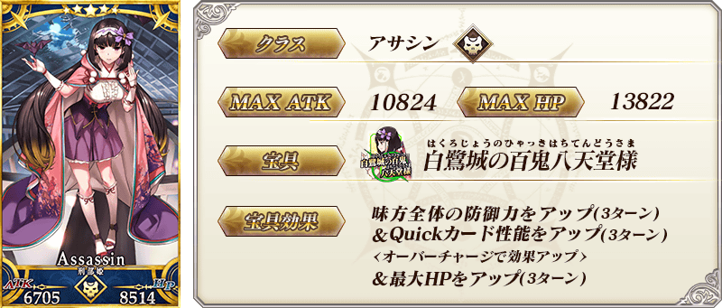
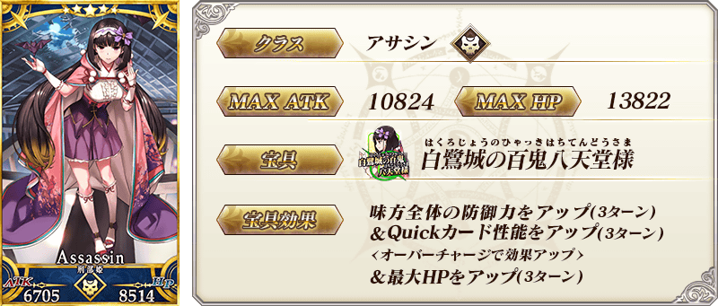
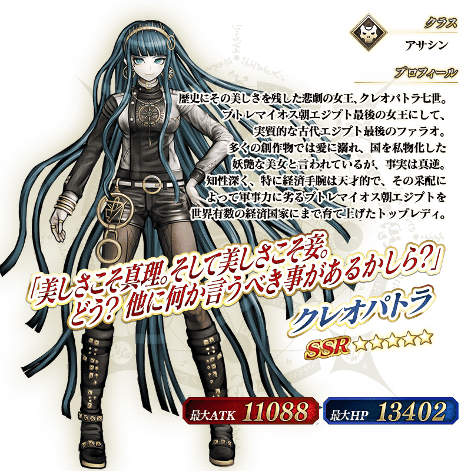
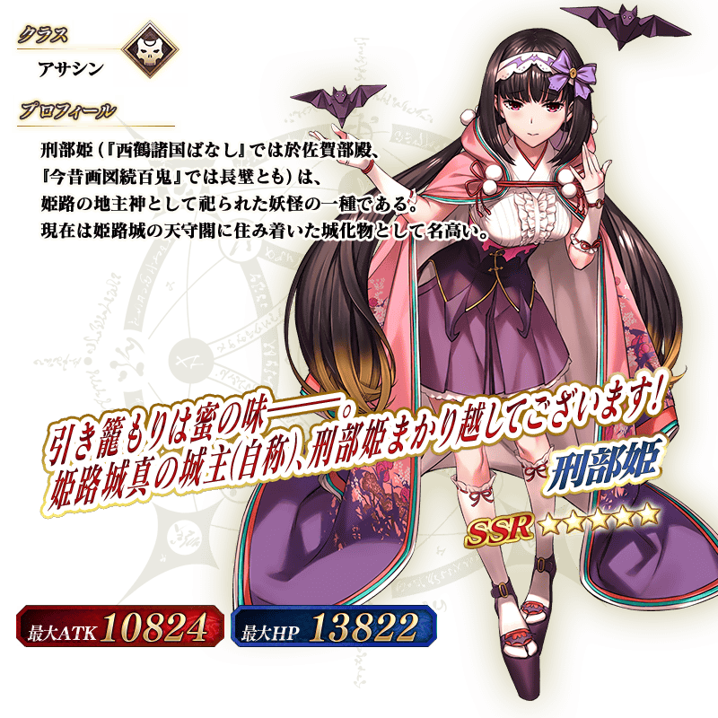
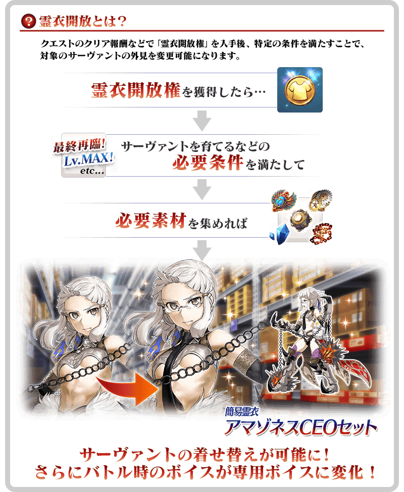

◆「亞馬遜.com Premium Pick Up召喚(每日交替)」期間◆
期間:2020年1月22日(三) 17:0020:00～2月5日(三) 11:59
期間限定「亞馬遜.com Premium Pick Up召喚(每日交替)」舉辦！
期間限定活動「拯救！ 亞馬遜.com ～CEO危機2020～」中活躍的「★5(SSR)克麗奧佩脫拉」以期間限定登場！
本次包含上述Pick Up 3位從者！
「★5(SSR)克麗奧佩脫拉」「★5(SSR)刑部姬(Assassin)」以每日交替Pick Up，「★4(SR)彭忒西勒亞(黃金國的Berserker)」常駐Pick Up！
Pick Up期間中，Pick Up對象從者的出現機率提升！
詳情請在聖晶石召喚畫面左下的召喚詳細確認。
11次召喚中確定1張★4(SR)以上和確定1位★3(R)以上的從者！ ※確定★4(SR)以上包含從者和概念禮裝。 ※本頁面皆為開發中圖片。會有與實際圖片相異的情況。
◆有關從者的注意◆
※請注意「亞馬遜.com Premium Pick Up召喚(每日交替)」做為每日交替，「★5(SSR)克麗奧佩脫拉」就算Pick Up期間中也會有不被抽出的日子。
※「★5(SSR)克麗奧佩脫拉」在Pick Up期間結束後不會追加到故事召喚。
※「★5(SSR)刑部姬(Assassin)」「★4(SR)彭忒西勒亞(黃金國的Berserker)」在Pick Up期間結束後仍會在故事召喚被抽出。
※關於隱藏真名尚未判明的從者，透過主線關卡的進行會讓從者及一部份寶具的名稱變化。
◆有關從者真名的注意◆
在2018年12月31日(二) 23:00以後新配信的主線故事及期間限定活動、一部份關卡、宣傳活動及召喚中，會顯示隱藏真名的對象從者真名。
※2018年12月31日(一) 22:59前已經配信的主線故事、復刻活動、一部份關卡中不在此限。
◆「亞馬遜.com Premium Pick Up召喚(每日交替)」Pick Up內容◆
| Pick Up期間 | Pick Up內容 | |
|---|---|---|
| 每日交替Pick Up | 全天Pick Up | |
| 1/22(三) 1/23(四) 22:59 |
★5 克麗奧佩脫拉 ★5 刑部姬(Assassin) |
★4 彭忒西勒亞 (黃金國的Berserker) |
| 1/23(四) 23:00～ 1/25(六) 22:59 |
★5 克麗奧佩脫拉 | |
| 1/25(六) 23:00～ 1/27(一) 22:59 |
★5 刑部姬(Assassin) | |
| 1/27(一) 23:00～ 1/29(三) 22:59 |
★5 克麗奧佩脫拉 ★5 刑部姬(Assassin) |
|
| 1/29(三) 23:00～ 1/31(五) 22:59 |
★5 克麗奧佩脫拉 | |
| 1/31(五) 23:00～ 2/2(日) 22:59 |
★5 刑部姬(Assassin) | |
| 2/2(日) 23:00～ 2/5(三) 11:59 |
★5 克麗奧佩脫拉 ★5 刑部姬(Assassin) |
|
※請注意會以每日交替變更Pick Up的從者。


 
※上述「★5(SSR)刑部姬(Assassin)」的卡面為靈基再臨第2階段。

※上述「★5(SSR)刑部姬(Assassin)」的卡面為靈基再臨第2階段。
 ※上述「★4(SR)彭忒西勒亞(黃金國的Berserker)」的卡面為靈基再臨第2階段。
※上述「★4(SR)彭忒西勒亞(黃金國的Berserker)」的卡面為靈基再臨第2階段。

 ※上述「★5(SSR)刑部姬(Assassin)」的立繪為靈基再臨第2階段。

做為期間限定活動「拯救！ 亞馬遜.com ～CEO危機2020～」的報酬，「★4(SR)彭忒西勒亞(黃金國的Berserker)」的靈衣開放權登場！
可入手上述靈衣開放權做為本活動的特定關卡報酬。
另外，想要靈衣開放的話，除了靈衣開放權外必須再加上一些開放條件。
◆有關靈衣開放權的注意◆
※本次追加的「★4(SR)彭忒西勒亞(黃金國的Berserker)」的簡易靈衣是伴随外觀變化一部份動作及語音。
※「★4(SR)彭忒西勒亞(黃金國的Berserker)」的靈衣開放權，只限期間限定活動「拯救！ 亞馬遜.com ～CEO危機2020～」的活動舉辦期間才能入手。
※就算是「★4(SR)彭忒西勒亞(黃金國的Berserker)」真名判明前的狀態也能進行靈衣開放。
※請注意未持有「★4(SR)彭忒西勒亞(黃金國的Berserker)」的情況，可入手靈衣開放權。但無法進行靈衣開放。


「靈衣開放」是自強化畫面進行。
※「靈衣開放」後會自動切換戰鬥角色和圖示。若想回到「靈衣開放」前的狀態和變成其他再臨階段的情況，可自從者詳細畫面變更。 ※進行「靈衣開放」也不會對職階和數值等有所變化。
介紹開放簡易靈衣「アマゾネスCEOセット」的「★4(SR)彭忒西勒亞(黃金國的Berserker)」寶具演出！
在「Fate/Grand Order」官方網站內的公告中，以影片公開寶具演出，敬請確認。
介紹「★5(SSR)克麗奧佩脫拉」「★5(SSR)刑部姬(Assassin)」「★4(SR)彭忒西勒亞(黃金國的Berserker)」的寶具演出！
在「Fate/Grand Order」官方網站內的公告中，以影片公開寶具演出，敬請確認。
其他還有，期間限定活動「拯救！ 亞馬遜.com ～CEO危機2020～」同時舉辦！
關於詳情，請自下述橫幅確認。
■「拯救！ 亞馬遜.com ～CEO危機2020～」詳細情報